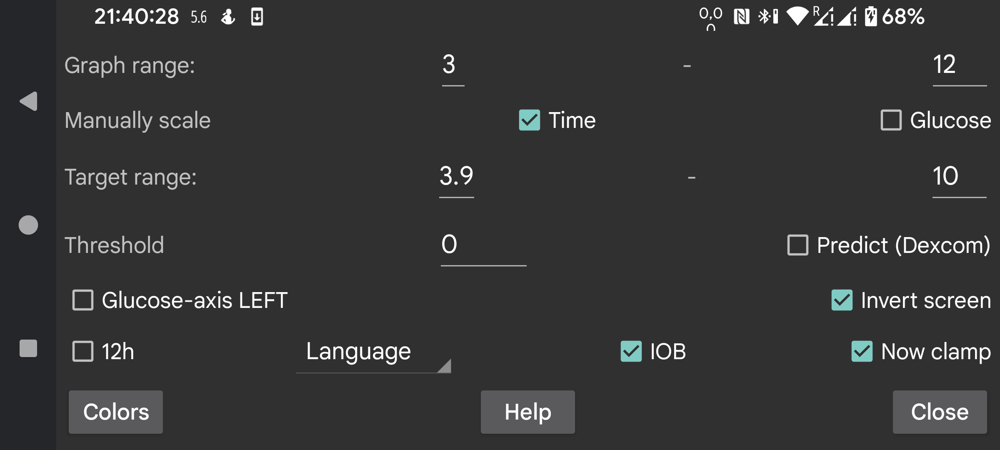

Change colors of curves, scans and numbers. To switch Dark mode, use right middle menu->Dark mode.
Give a low and high value, so that the bottom of the screen correspondents to the lowest and the top to the highest. These values are only used when all the glucose values displayed on the screen are within these bounds. Otherwise, the bounds are widened so that all values are visible. When you take 3 mmol/L (54 mg/dL) and 9 mmol/L (162 mg/dL), and all the values on the visible display are between 5 mmol/L and 6 mmol/L, the graph displays a glucose axis from 3 to 9.
If Manually scale Glucose is turned on, you can change this: moving your finger over the top of the screen, moves the top half of the graph up and down; moving over the bottom of the screen moves the bottom half of the graph up and down.
The higher side of the display is colored differently so you can see high values easier. The same is true for low values. A red line is displayed to show the too low side of the display.
Place the numbers of the glucose level in the graph on the left of the screen. Useful if you want to place your current glucose in the middle of the screen, for example in Wear OS.
Apply a threshold to the rate of change of glucose values. Only when the rate of change diverges the specified amount from 0 is the rate of change arrow different from horizontal. You can use arbitrary values between 0 and 0.8. The threshold is used to prevent giving to much meaning to small absolute rate of change values. It is very well possible that the rate of change show a slowly rising glucose value, but in reality it is falling. The threshold is used to make a more cautious statement.
Dexcom sensors send with every actual value also a predicted value. I googled for it, but couldn’t find any reference to it. I only found that Dexcom supported an alarm that predicted lows up to 20 minutes in advance, see https://www.dexcom.com/g7/how-it-works#alerts
When I placed these values 20 minutes in the future, they didn’t fit very well. They did much better when I placed them 10 minutes in the future.
When you switch on this option, these predicted values are shown in the same way as the history values of Libre sensors are shown in Juggluco. You can also turn them off by unchecking right middle menu→History. In Juggluco they are not used for alarms, you can just display them to judge how well they predict.
Turn the display upside down. It is switched on by default, because otherwise I'd sometimes accidentally touch OK while scanning a sensor.
Some people ask for portrait mode, but I have turned that off, because it is totally inappropriate for the display of the glucose graph.
IOB is a measure of how much insulin remains from previous insulin doses. To do this, you must enter insulin doses under a label in the “Rapid acting insulin” category. You can specify what labels are “Rapid acting insulin” under Left menu→Settings→Exchange data→Web server→Give Amounts.
When “Now clamp” is set, the time period displayed on the screen is scrolled to the left so that the present is always at the same point of the screen. Some users run Juggluco on an Android emulator on a computer at a few meter distance from them. When “Now clamp” is turned off, the location of the current glucose value would move to the right with the passage of time, so that after a few hours it isn’t visible anymore. This makes it necessary to walk to the computer and scroll the screen a few centimeter. When “Now clamp” is turned on, this distraction is no longer required.
Juggluco is displayed in the chosen language. When no language code is selected, the system language is used.